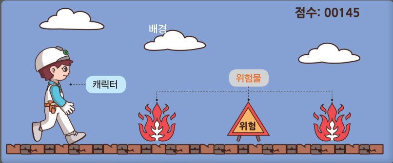
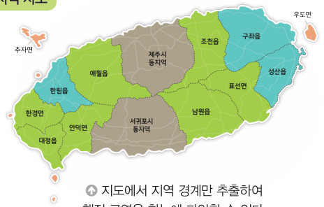
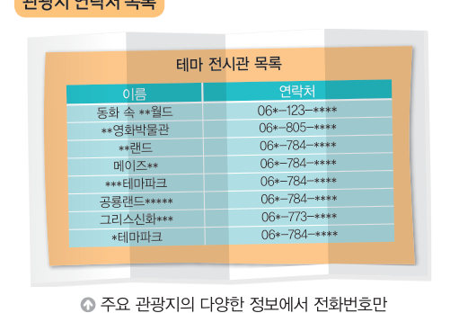
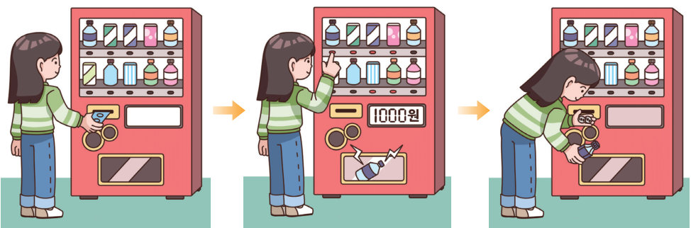

같은 제주도라도 목적에 따라 도로 지도, 맛집 지도, 연락처 목록처럼 필요한 정보만 남긴다. 게임과 자동판매기를 직접 움직여 보며 문제를 작은 문제로 나누고(문제 분해) 꼭 필요한 요소만 골라내는(핵심 요소 추출) 연습을 해 보자.
문제의 목적에 따라 문제 해결에 필요한 요소를 찾아내고 문제를 작은 문제로 나누어 해결 가능한 수준으로 만드는 것을 추상화라고 한다. 추상화는 문제의 복잡성을 줄여 주고, 효율적으로 문제를 해결할 수 있게 해 준다.
예를 들어, 제주도를 여행할 때 원하는 목적에 따라 제주도를 지역 지도, 도로 지도, 맛집 지도, 관광지 연락처 목록 등으로 각각 다르게 추상화할 수 있다.


| 이동 경로를 쉽게 계획하고 싶다. | |
| 행정 구역을 한눈에 파악하고 싶다. | |
| 식사할 장소를 쉽게 확인하고 싶다. | |
| 관광지에 전화로 예약하고 싶다. |
문제를 추상화하기 위해 ‘문제 분해’와 ‘핵심 요소 추출’의 방법을 사용할 수 있다. 이러한 과정을 통해 해결해야 할 문제의 범위를 좁히고 구체화할 수 있다.
| 캐릭터 이름 · 위치 · 모습 | |
| 위험물의 종류 · 위치 | |
| 시작 점수 · 점수 계산식 · 점수 표시 위치 |
게임과 관련된 요소를 써 보고, 그중 캐릭터 업그레이드를 위한 핵심 요소를 추출해 보자.

| 재고 표시하기 | |
| 음료수 제공하기 | |
| 거스름돈 반환하기 |
| 핵심 요소는 문제의 목적과 관계없이 항상 같다. | |
| 작은 문제를 모두 해결하면 원래의 큰 문제가 해결된다. |
| 평가 기준 | 스스로 평가 |
|---|---|
| 추상화의 의미와 중요성을 설명할 수 있는가? | |
| 해결해야 할 문제를 작은 문제로 나누고 핵심 요소를 추출할 수 있는가? |